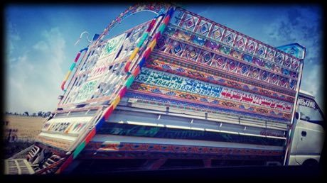

Home / Living Traditions / South Asia
Playable heritage gamePakistani truck art
Also known as ٹرک آرٹ
Truck art is the lavish painted decoration of lorries and buses across Pakistan: painters cover tailgates, doors and roofs with bright flowers, birds, arches and bands of shining tape. Each panel is arranged around a centre line, with matching flowers on the left and right.


How to play
- Choose a paint colour and a motif from the tray under the panel.
- Tap a square to paint it: the same motif appears on the matching square on the other side of the panel.
- Copy the small panel shown above, then press Check.
Rules at a glance
- The panel is a mirror image left to right, as a tailgate is.
- A square counts only when its motif and its colour both match the target.
- Three stars need a nearly perfect copy; you can undo or clear as often as you like.
About the tradition
Truck painting is practised in workshops in Karachi, Rawalpindi, Peshawar and other cities of Pakistan, and in parts of India. Painters often learn from family and work to the taste of the owner, with different cities favouring their own styles.
Origins
A living tradition passed from person to person; it is not tied to a single dated origin. It belongs to the cultural world of South Asia.
Credits
- Pattern design: World Heritage Games (original)
- Photo: imusasheikh, CC BY-SA 4.0, source on Wikimedia Commons
- Text: CC BY-SA 4.0, World Heritage Games.
Sources

Get the app
Pakistani truck art is one of 20 paper and paint crafts in the Paper & Paint of the World app for iPhone, iPad and Android. Submitted to the App Store and Google Play; in review. Store links appear here the day it goes live. One app, many traditions, no account needed.
More games to play


Lippan kaam mud-and-mirror relief
India +1 · Crafts and makingPlay preview · in the Paper & Paint of the World app
Mehndi henna pattern drawing
India +1 · Crafts and makingPlay preview · in the Paper & Paint of the World app

Ndebele geometric wall painting
South Africa · Crafts and makingPlay preview · in the Paper & Paint of the World app
More from Pakistan

Ajrak block printing
Pakistan · Crafts and making


Kathak tatkar footwork rhythm
India +1 · Other traditions

Phulkari darn-stitch embroidery
India +1 · Crafts and makingPlay preview · in the Textile Crafts of the World app